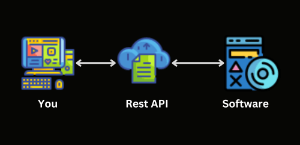

APIs (Application Programming Interfaces) are often thought only to be web-based. The typical association is with Rest APIs, which essentially use web protocols or TCP/UDP custom protocols.
However, APIs are better thought of as an interface between two applications or code sources which are executing at the same time. A fantastic example of this is graphics APIs.
How can I, the developer, interact with the GPU and make it show 3D models, animations and process a game frame? This interaction is the very definition of an interface.
Through an interface we have an intermediary layer between the graphics card and the developer. Popular interfaces between the developer and graphics card are OpenGL, WebGL, Vulkan, DirectX, SDL and many more.
Of course, there is a driver and firmware associated with the graphics card. It is those two we manipulate with the graphics interface or graphics API. Further, many libraries in Python and well, every language library, can be thought of as an interface.
In reality, interfaces are used constantly to manipulate foreign forces using code. Whether or not we expressly call it an interface is a whole other thing.
You could say web scrappers, like beautiful soup(Python), are an interface between Python and the networking layer of your computer. Though we don't call them interfaces but just a library. However, it is the same function as an API.
The fact that we use different terminology for different types of interfaces can be very confusing. But, once you understand most libraries are in-fact interfaces between two software, it should be easier to digest the idea of an API.
Examples of APIs
Every major app has an API. Some are plugin APIs, some are hardware APIs, some are web APIs and there are many other types of interfaces. I can give you a few examples of these, just to solidify the thought.
Firstly, Unity. This game engine has a scripting interface which allows you to interact with the engine using C#. It is a set of classes, functions, objects etc. This interface is called the Unity API and every script uses it.
Second, Minecraft's plugin API. Developers created Bukkit, Spigot, Paper, Forge and Fabric which are all scripting interfaces, allowing you to manipulate Minecraft either server-side or client-side.
Third, Google Maps API. Google created a way to get Maps using their live data programmatically. You would be interfacing your applications with Google Maps, usually with a web request.
What Is the Difference Between a REST API and Regular API?
A Rest API is an API with a specific type of construction, used across the internet. That really is all there is to it. Rest APIs hold no information and hold no configuration while its running. Configuration is done before and after running the API.
The "rest" part of Rest API means there is no saved data in the API. It does not "hold the state of the application" and therefore merely passes information from one application to another.
This is unlike other APIs, like graphics programming or Unity scripting, whereby data is actually held by the interface itself. By contrast, both graphics and Unity APIs are what is known as a state machine. Essentially, they hold the state of the program for the developer to use later.
Rest APIs, instead of interfacing with hardware or a game engine is an interface for two applications across the internet...
Computer, Cloud, Software icons by Icons8
Think of it like this picture. You, a client, access an internet-based API to manipulate another software, the one on the right. All the configuration and information is managed in the software the Rest API is connecting to.
Imagine this, you are holding a remote control for a TV. You are the client, the remote control is the Rest API and the server is the TV. Does the remote control hold the data for your TV? No, the TV has that data. But, the Rest API or the remote controller manipulates it...
Anywho, I hope you learned something...
Happy coding!
Resources
OpenGL: https://www.opengl.org/
Web scrapper example: https://pypi.org/project/beautifulsoup4/
Unity game engine: https://unity.com/
Minecraft API: https://www.spigotmc.org/wiki/spigot-installation/
Google Maps API: https://developers.google.com/maps